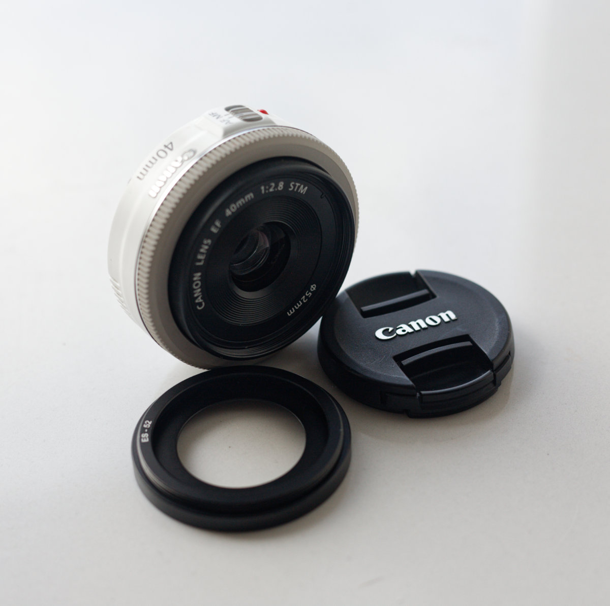
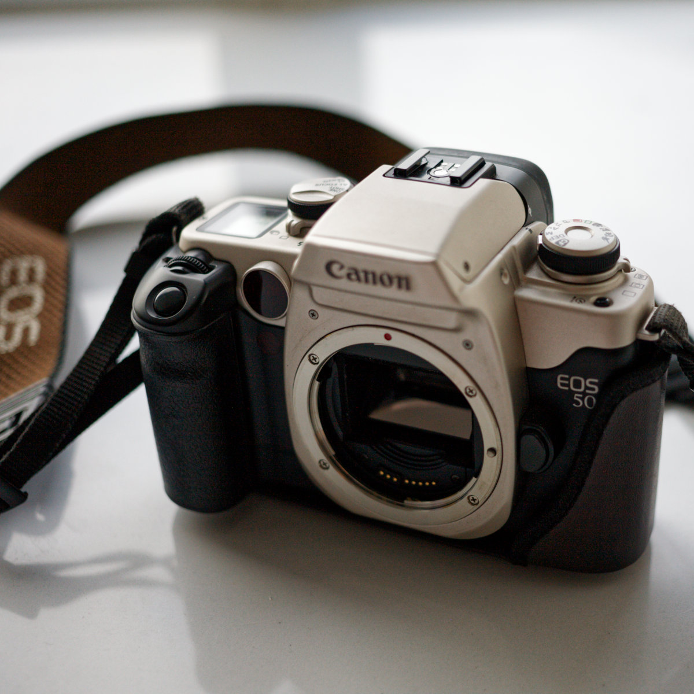
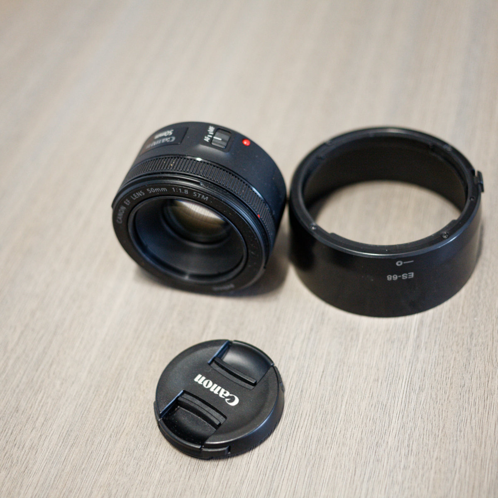
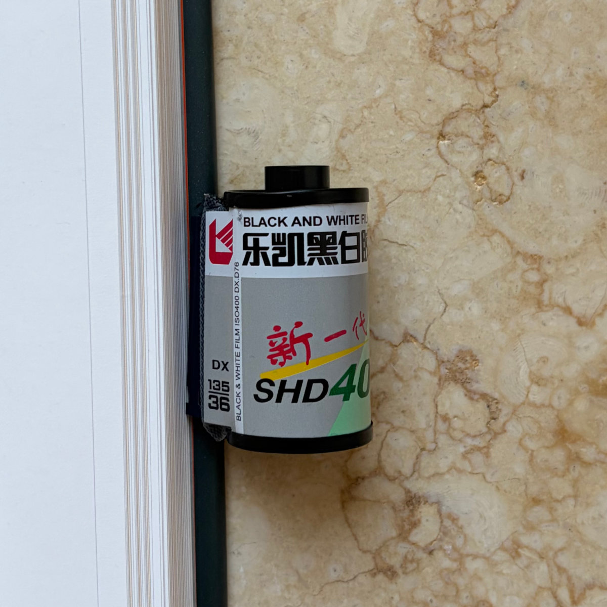
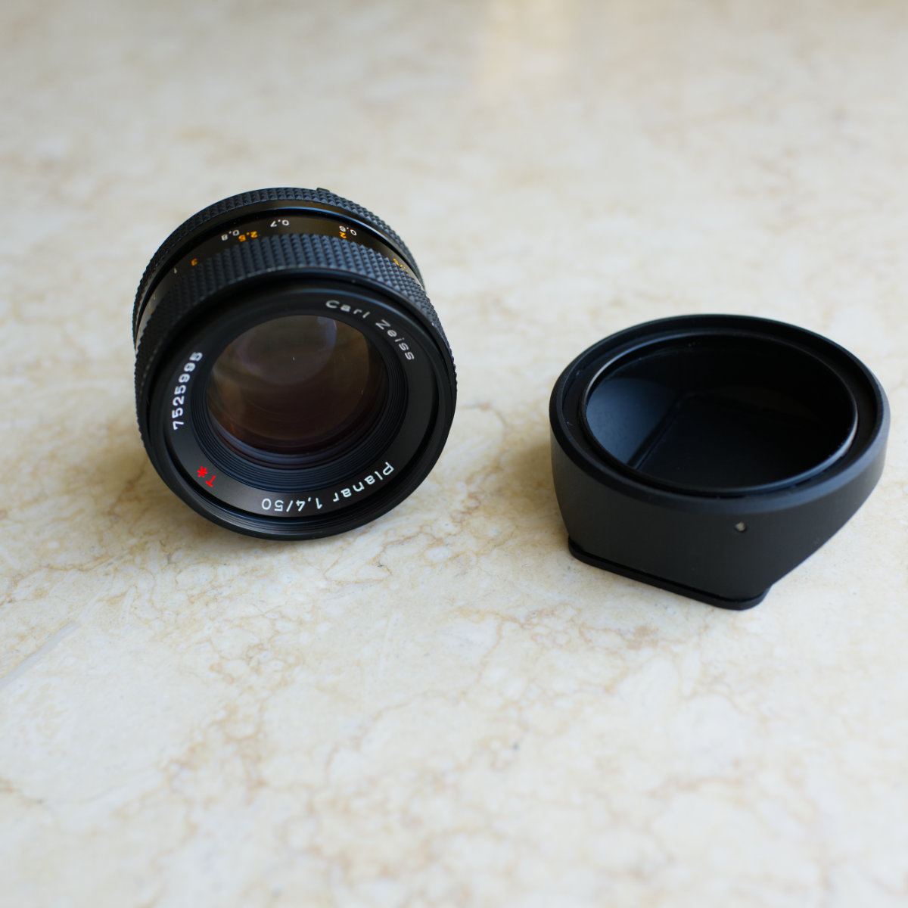
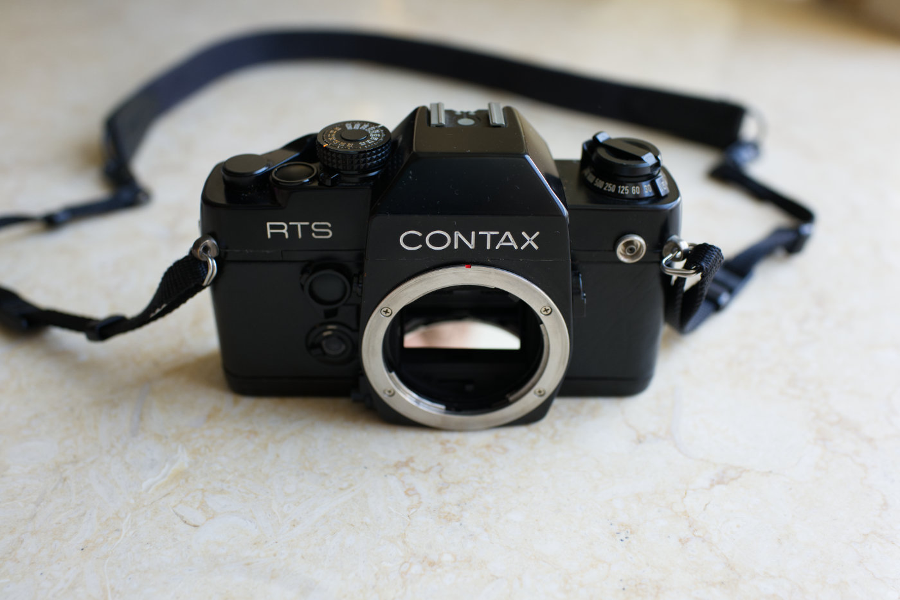
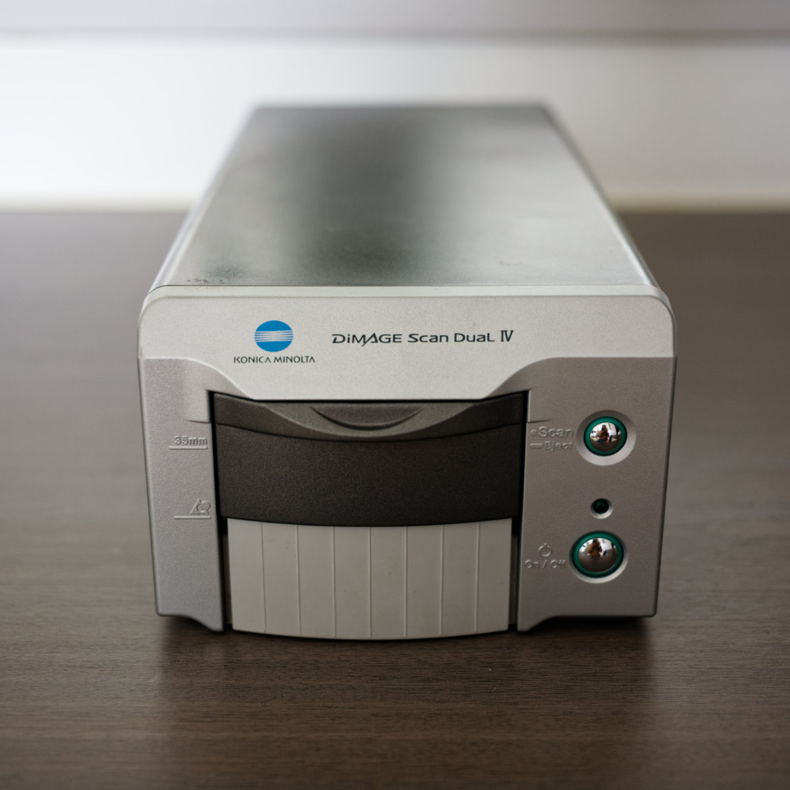
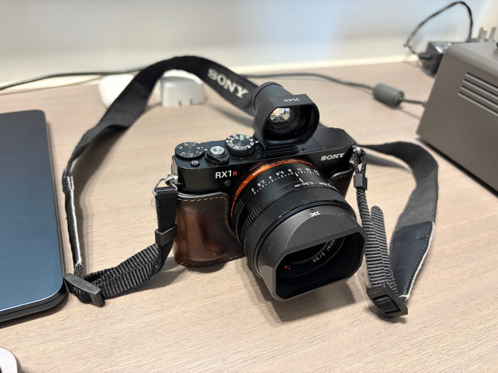

Gear
七种武器
Things I Use and Keep.

镜头：CANON EF 40mm f/2.8 STM 小到几乎可以忘记它存在的 EF 饼干镜头。
胶片相机：CANON EOS 50 一台轻巧而现代的自动 135 胶片相机。
镜头：Canon EF 50mm f/1.8 STM 轻巧、便宜、可靠的 EF 标准镜头。
黑白胶卷：乐凯 SHD 400 国产 ISO 400 黑白负片，适合街头、日常记录与弱光环境。
镜头：Carl Zeiss Planar T* 50mm F1.4 一支用了很多年的蔡司经典标头，尤其喜欢它在黑白影像中的层次与过渡。
CONTAX RTS 相机 陪伴十多年的经典胶片单反，最喜欢搭配 Planar 50/1.4 拍黑白。
底片扫描仪：MINOLTA DiMAGE Scan Dual IV 陪伴十余年的 35mm 底片扫描仪，至今仍在服役。 黑白胶卷：Fomapan 200 Creative
黑白胶卷：Fomapan 200 Creative
黑白胶卷：Fomapan 200 Creative
黑白胶卷：Fomapan 200 Creative
 Olympus 35SPn
旁轴七剑之首，是当时日本制造的最高级旁轴镜间快门相机之一。
Olympus 35SPn
旁轴七剑之首，是当时日本制造的最高级旁轴镜间快门相机之一。

SONY DSC-RX1RM2 (RX1R II) 轻便全画幅 35mm 定焦，适合随身记录日常光线。 我的文石BOOX-Poke6电纸书
显示效果不错，用起来很方便。
我的文石BOOX-Poke6电纸书
显示效果不错，用起来很方便。
 我的Hush Puppies暇步士主力双肩包
Hush Puppies。
我的Hush Puppies暇步士主力双肩包
Hush Puppies。
 我为什么选择 iPhone Air
超薄超轻超棒手感iPhone air
我为什么选择 iPhone Air
超薄超轻超棒手感iPhone air
 胡桃木阅读支架
实体厚书与大版杂志的阅读好伙伴。
胡桃木阅读支架
实体厚书与大版杂志的阅读好伙伴。